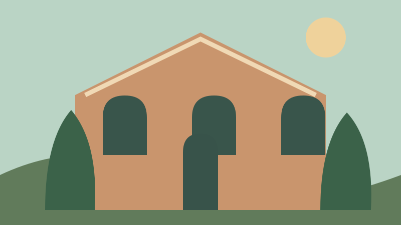

Conheça antes de chegar
Tour Virtual
Uma prévia dos ambientes do Museu da Música – Itu. Escolha uma sala e conheça alguns dos temas que fazem parte da visita.
Quando o tour 360° estiver disponível: arraste para girar, use as setas para avançar e a roda do mouse para aproximar.
Começar a explorarPercorra os ambientes
Sete pontos de descoberta.
Selecione um ambiente para ver sua imagem e uma breve descrição.

O tour 360° ainda não está disponível. Explore as salas nesta prévia ilustrada.
Esta página apresenta uma prévia ilustrativa. As imagens não são registros fotográficos dos ambientes e não substituem um tour 360° real.
Sobre este ambiente
Fachada
A casa construída em 1890 é a porta de entrada para histórias musicais de Itu. Tombada pelo CONDEPHAAT, ela integra a memória e a arquitetura da cidade.
A experiência continua
Gostou do que viu? Venha pessoalmente.
A entrada é franca. Estamos na Rua Floriano Peixoto, 480, aos domingos, das 9h às 13h.